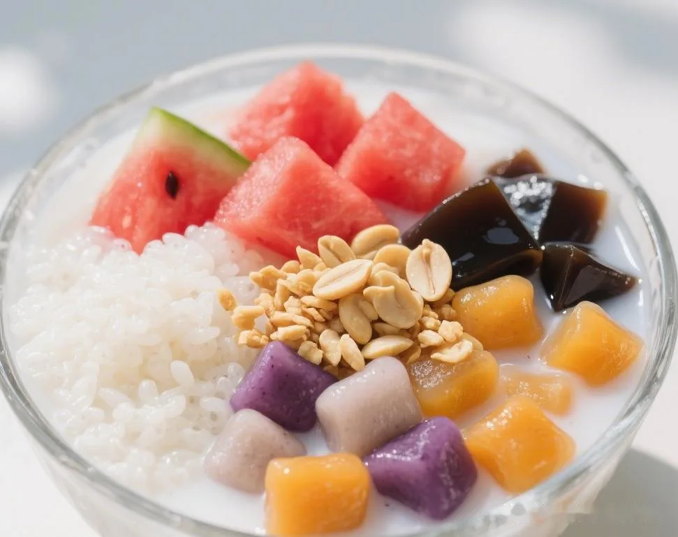

中文原文
2025-06-09 11:04:05 作者：陈坚 来源：福州晚报 责任编辑：周冬
8日中午，央视《新闻直播间》栏目播出《清凉一夏·福建福州：勇于创新，长乐冰饭走向世界》，报道长乐冰饭在美国、加拿大等地走红的情况。央视主持人表示，长乐冰饭这一口清凉走向世界的过程，也是当地人不断创新的过程。
央视首先聚焦高炎青在长乐区奎桥美食街经营的冰饭店。今年63岁的高炎清说，这家冰饭店已经开了25年，以前面积只有十几平方米，现在店铺变成了两层小楼，面积扩大到200多平方米。高炎清说：“夏天的时候一天能卖1500碗，一般要排队半个多小时。”这几年该店的外卖订单也不少，4月到10月高峰期，一般每天有200多单到400多单外卖订单。
奎桥美食街上聚集了8家冰饭店，成为了名副其实的冰饭一条街。奎桥路紧挨着福州地铁6号线十洋站，因为一出站就是冰饭一条街，所以很多人也把6号线称作“冰饭直通车”。从福州市区出发，坐着地铁6号线来到长乐，吃上一碗正宗的冰饭，也成了很多市民、游客夏日消暑的宝藏路线。
有了一条街和“直通车”，经营者还在思考如何创新，怎么把传统冰饭做出新花样。比如，当下已经推出奶茶冰饭、椰子冰饭、茉莉冰饭、榴莲冰饭等。不断上新的冰饭搭档还有很多，比如冰饭配烧烤、冰饭配小龙虾等。
为了助力冰饭的推广，长乐区每年夏季还会举办冰饭节，融合美食、潮流音乐等元素，吸引了大量游客前来打卡。一碗冰饭不仅是福州人的夏日味道，也成为撬动消费的新引擎。
“长乐夜市有20多处，冰饭店有40多家。奎桥美食街是长乐一条比较大的夜市集市，有8家冰饭店，一年的营业额有5000多万元。”长乐区商务局流通科负责人陈书鼎说。
这几年长乐冰饭还走出国门，吸引全球的食客。
“有一家我们长乐人开在美国西雅图的冰饭店，生意也很好。美国、加拿大等地都有长乐冰饭，我们长乐冰饭出海了。”冰饭经营者高友星说。
English translation
June 9, 2025, 10:04:05 / Source: Fuzhou Evening News / Reporter: Chen Jian / Editor: Zhou Dong
At noon on June 8, CCTV’s News Studio broadcast a report titled Cool Summer · Fuzhou, Fujian: Innovation Takes Changle Ice Rice to the World, covering the growing popularity of this local snack in the United States, Canada and other countries. The CCTV host noted that Changle Ice Rice’s journey to global fame is also a story of continuous innovation by local people.
The report first featured Gao Yanqing’s ice rice shop on Kuiqiao Food Street in Changle District. Now 63 years old, Gao has run the shop for 25 years. “It used to be just a little over 10 square meters,” he said. “Today it’s a two-story building covering more than 200 square meters.”
“In summer, we sell up to 1500 bowls a day, and customers usually wait in line for more than half an hour,” he added. The shop also receives a large number of takeaway orders. During the peak season from April to October, daily takeaway orders normally range from 200 to 400.
Kuiqiao Food Street is home to 8 ice rice shops, making it a genuine “Ice Rice Street”. The street sits right next to Shiyang Station on Fuzhou Metro Line 6. Since passengers step straight into Ice Rice Street when exiting the station, many people call Line 6 the “Ice Rice Express”.
For many local residents and tourists, taking Metro Line 6 from downtown Fuzhou to Changle for a bowl of authentic ice rice has become a popular summer choice to beat the heat.
With the help of “Ice Rice Street” and the “Ice Rice Direct Line”, shop owners have continued to explore innovations to give this traditional delicacy new twists. For example, they now offer creative variants like Milk Tea Ice Rice, Coconut Ice Rice, Jasmine Ice Rice, and Durian Ice Rice. There are also diverse food pairings: Ice Rice with barbecued meats, Ice Rice with spicy crawfish, and more.
To promote Changle Ice Rice, Changle District holds an Ice Rice Festival every summer, combining food, trendy music and other elements to draw large numbers of visitors. A bowl of ice rice is not only a beloved summer taste for Fuzhou people, but also a new engine driving local consumption.
“There are over 20 night markets in Changle, with more than 40 Ice Rice shops. Kuiqiao Food Street is one of the larger night market hubs in Changle, housing 8 Ice Rice shops that generate over 50 million RMB in annual revenue.” said Chen Shuding, an official in charge of Changle District Bureau of Commerce.
In recent years, Changle Ice Rice has gone global, winning fans among food lovers around the world.
“One of our fellow Changle natives runs an ice rice shop in Seattle, USA, and it’s doing very well. Changle Ice Rice can now be found in the US, Canada and elsewhere. Our local snack has gone overseas,” said Gao Youxing, another ice rice shop owner.